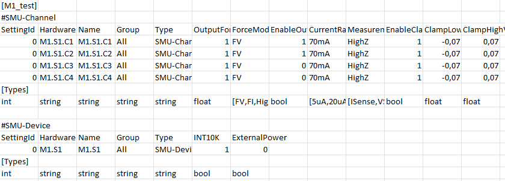

3.9. Part 8a: Paramter Tables I#
This is the 8th introductory overview of programming the Aspect Device Engine Python API.
This document is available as pdf and interactive jupyter notebook.
The introduction includes the following objectives:
How to load parameter setting tables
Inspecting the contents of a table
How to modify the parameters in the table
Sending the parameters of a table to the hardware
3.9.1. Introduction#
There are two basic options for programming the idSMU hardware:
Firstly, by calling object methods or setting properties of the hardware models, as described in the previous chapters.
The second method is a tabular method.
Here, tables are used to hold the values of the hardware parameters. These can be modified and applied.
The tabular method is slower than the direct method calls.
However, if performance is not the highest priority,
this method can be used to export the state of the hardware and apply it again later.
Instead of dozens of method calls, just one is then sufficient to set all parameters at once.
from aspectdeviceengine.enginecore import IdSmuService, IdSmuSettingsService, IdSmuServiceRunner, IdSmuBoardModel, IdSmuSettingsService
from aspectdeviceengine.enginecore import IdSmuBoardModel, IdqTable, IdqTableGroup
import plotly.graph_objects as go
import pathlib,os
import numpy as np
srunner = IdSmuServiceRunner()
mbX1 : IdSmuBoardModel = srunner.get_idsmu_service().get_first_board()
The IdSmuSettingsService class is used to load and apply tables:
setting_service : IdSmuSettingsService = srunner.get_idsmu_service().get_settings_service()
3.9.2. Import a table from csv#
The parameter tables, also known as setting tables, have a special format.
If you open one of the CSV files with such a table, it looks like this, for example:

Firstly, the name of the table is given in square brackets [].
A table can consist of several groups. As the parameters for the idSMU device are different to the channel parameters,
the parameters are each in their own group with their own column headers.
The table name is followed by the group name (#).
This is followed by the column header of the group and then the actual data.
This is followed by the entries for the data type or, in the case of enumeration types, the valid values for this parameter.
These entries are automatically appended when exporting a table - the user does not have to worry about them.
A table can be loaded with the import_settings_from_csv() method of the SettingService:
setting_service.import_settings_from_csv(os.path.join(os.path.abspath(""), "setting_tables_m1.csv" ))
# List all parameter setting names
print(setting_service.get_parameter_settings_names())
# We only print 10 columns so that the output fits on the screen
print(setting_service.print_settings('M1_test', False, False, 10))
['M1_test']
Group name: SMU-Channel
+-----------+------------+----------+-------+-------------+------------------+-----------+--------------+--------------+-----------------+
| SettingId | HardwareId | Name | Group | Type | OutputForceValue | ForceMode | EnableOutput | CurrentRange | MeasurementMode |
+-----------+------------+----------+-------+-------------+------------------+-----------+--------------+--------------+-----------------+
| 0 | M1.S1.C1 | M1.S1.C1 | All | SMU-Channel | 1 | FV | 1 | 70mA | HighZ |
| 0 | M1.S1.C2 | M1.S1.C2 | All | SMU-Channel | 1 | FV | 1 | 70mA | HighZ |
| 0 | M1.S1.C3 | M1.S1.C3 | All | SMU-Channel | 1 | FV | 0 | 70mA | HighZ |
| 0 | M1.S1.C4 | M1.S1.C4 | All | SMU-Channel | 1 | FV | 0 | 70mA | HighZ |
+-----------+------------+----------+-------+-------------+------------------+-----------+--------------+--------------+-----------------+
Group name: SMU-Device
+-----------+------------+-------+-------+------------+--------+---------------+
| SettingId | HardwareId | Name | Group | Type | INT10K | ExternalPower |
+-----------+------------+-------+-------+------------+--------+---------------+
| 0 | M1.S1 | M1.S1 | All | SMU-Device | 1 | 0 |
+-----------+------------+-------+-------+------------+--------+---------------+
3.9.3. Modification of table entries#
The entire table with its groups is managed by an actual table of the type IdqTable.
The dqTableGroup type represents a group.
paratable : IdqTable = setting_service.get_parameter_setting('M1_test')
group : IdqTableGroup = paratable.get_table_group('SMU-Channel')
To change a table entry, we need the row index and the column name of the cell.
The helper method get_row_index() is used to find the row index for a known entry in the table:
row_idx = [group.get_row_index('HardwareId', 'M1.S1.C1'), group.get_row_index('HardwareId', 'M1.S1.C2')]
print(row_idx)
[0, 1]
The set_parameter_value() method is now used to change a value in a table group.
All values in the table are of type string:
group.set_parameter_value(row_index=row_idx[0], parameter_name='OutputForceValue', parameter_value='5')
group.set_parameter_value(row_index=row_idx[1], parameter_name='OutputForceValue', parameter_value='6')
print(setting_service.print_settings('M1_test', False, False, 10))
Group name: SMU-Channel
+-----------+------------+----------+-------+-------------+------------------+-----------+--------------+--------------+-----------------+
| SettingId | HardwareId | Name | Group | Type | OutputForceValue | ForceMode | EnableOutput | CurrentRange | MeasurementMode |
+-----------+------------+----------+-------+-------------+------------------+-----------+--------------+--------------+-----------------+
| 0 | M1.S1.C1 | M1.S1.C1 | All | SMU-Channel | 5 | FV | 1 | 70mA | HighZ |
| 0 | M1.S1.C2 | M1.S1.C2 | All | SMU-Channel | 6 | FV | 1 | 70mA | HighZ |
| 0 | M1.S1.C3 | M1.S1.C3 | All | SMU-Channel | 1 | FV | 0 | 70mA | HighZ |
| 0 | M1.S1.C4 | M1.S1.C4 | All | SMU-Channel | 1 | FV | 0 | 70mA | HighZ |
+-----------+------------+----------+-------+-------------+------------------+-----------+--------------+--------------+-----------------+
Group name: SMU-Device
+-----------+------------+-------+-------+------------+--------+---------------+
| SettingId | HardwareId | Name | Group | Type | INT10K | ExternalPower |
+-----------+------------+-------+-------+------------+--------+---------------+
| 0 | M1.S1 | M1.S1 | All | SMU-Device | 1 | 0 |
+-----------+------------+-------+-------+------------+--------+---------------+
3.9.4. Writing the parameters#
The apply_parameter_setting() method can now be used to write the parameters of a group or the entire table to the hardware.
We then examine a few channel parameters:
setting_service.apply_parameter_setting(setting_name='M1_test', board_address='M1', filtered=False, table_group_name='SMU-Channel')
print(mbX1.idSmu2Modules['M1.S1'].smu.channels['M1.S1.C1'].enabled)
print(mbX1.idSmu2Modules['M1.S1'].smu.channels['M1.S1.C1'].voltage)
print(mbX1.idSmu2Modules['M1.S1'].smu.channels['M1.S1.C2'].enabled)
print(mbX1.idSmu2Modules['M1.S1'].smu.channels['M1.S1.C2'].voltage)
True
4.998809814453125
True
5.999847412109375
group.at[row_idx[0], 'OutputForceValue'] = "0"
group.at[row_idx[1], 'EnableOutput'] = "0"
print(setting_service.print_settings('M1_test', False, False, 10))
setting_service.apply_parameter_setting('M1_test', 'M1', False, 'SMU-Channel')
Group name: SMU-Channel
+-----------+------------+----------+-------+-------------+------------------+-----------+--------------+--------------+-----------------+
| SettingId | HardwareId | Name | Group | Type | OutputForceValue | ForceMode | EnableOutput | CurrentRange | MeasurementMode |
+-----------+------------+----------+-------+-------------+------------------+-----------+--------------+--------------+-----------------+
| 0 | M1.S1.C1 | M1.S1.C1 | All | SMU-Channel | 0 | FV | 1 | 70mA | HighZ |
| 0 | M1.S1.C2 | M1.S1.C2 | All | SMU-Channel | 6 | FV | 0 | 70mA | HighZ |
| 0 | M1.S1.C3 | M1.S1.C3 | All | SMU-Channel | 1 | FV | 0 | 70mA | HighZ |
| 0 | M1.S1.C4 | M1.S1.C4 | All | SMU-Channel | 1 | FV | 0 | 70mA | HighZ |
+-----------+------------+----------+-------+-------------+------------------+-----------+--------------+--------------+-----------------+
Group name: SMU-Device
+-----------+------------+-------+-------+------------+--------+---------------+
| SettingId | HardwareId | Name | Group | Type | INT10K | ExternalPower |
+-----------+------------+-------+-------+------------+--------+---------------+
| 0 | M1.S1 | M1.S1 | All | SMU-Device | 1 | 0 |
+-----------+------------+-------+-------+------------+--------+---------------+
4
srunner.shutdown()